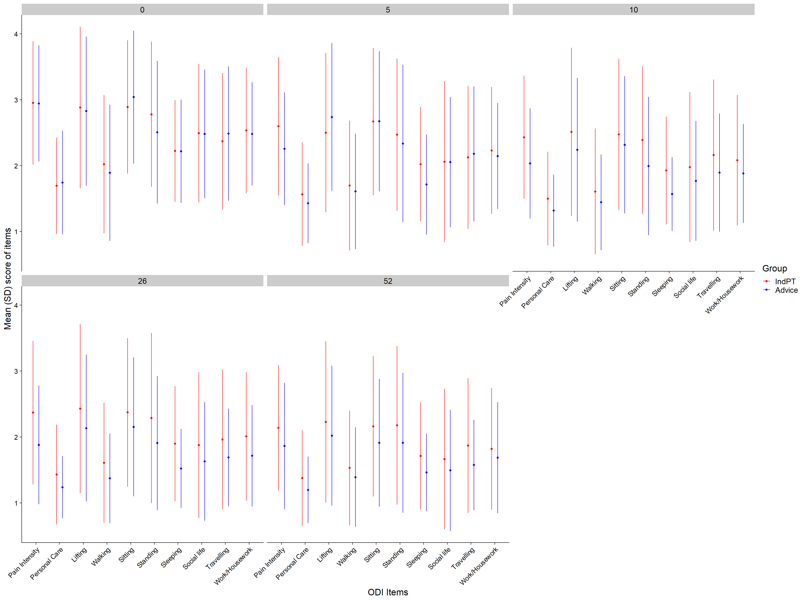
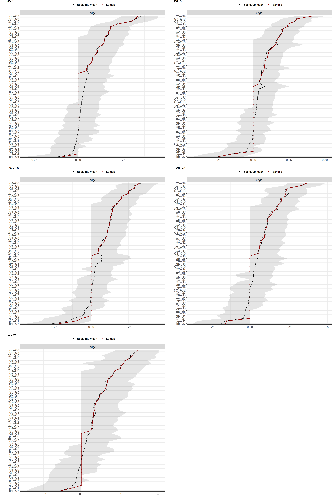
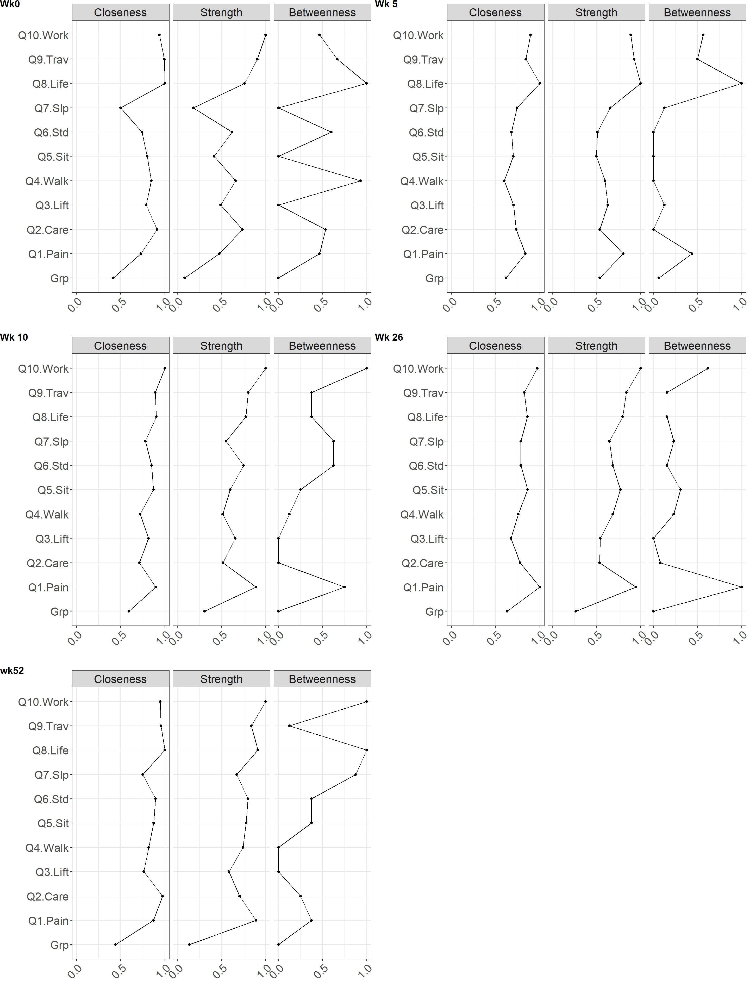

Last updated: 2021-04-14
Checks: 6 1
Knit directory: 2020_ODI_network/
This reproducible R Markdown analysis was created with workflowr (version 1.6.2). The Checks tab describes the reproducibility checks that were applied when the results were created. The Past versions tab lists the development history.
The R Markdown file has unstaged changes. To know which version of the R Markdown file created these results, you’ll want to first commit it to the Git repo. If you’re still working on the analysis, you can ignore this warning. When you’re finished, you can run wflow_publish to commit the R Markdown file and build the HTML.
Great job! The global environment was empty. Objects defined in the global environment can affect the analysis in your R Markdown file in unknown ways. For reproduciblity it’s best to always run the code in an empty environment.
The command set.seed(20201008) was run prior to running the code in the R Markdown file. Setting a seed ensures that any results that rely on randomness, e.g. subsampling or permutations, are reproducible.
Great job! Recording the operating system, R version, and package versions is critical for reproducibility.
Nice! There were no cached chunks for this analysis, so you can be confident that you successfully produced the results during this run.
Great job! Using relative paths to the files within your workflowr project makes it easier to run your code on other machines.
Great! You are using Git for version control. Tracking code development and connecting the code version to the results is critical for reproducibility.
The results in this page were generated with repository version 225cdea. See the Past versions tab to see a history of the changes made to the R Markdown and HTML files.
Note that you need to be careful to ensure that all relevant files for the analysis have been committed to Git prior to generating the results (you can use wflow_publish or wflow_git_commit). workflowr only checks the R Markdown file, but you know if there are other scripts or data files that it depends on. Below is the status of the Git repository when the results were generated:
Ignored files:
Ignored: .Rproj.user/
Unstaged changes:
Modified: analysis/2-network.Rmd
Modified: analysis/3-report.Rmd
Note that any generated files, e.g. HTML, png, CSS, etc., are not included in this status report because it is ok for generated content to have uncommitted changes.
These are the previous versions of the repository in which changes were made to the R Markdown (analysis/3-report.Rmd) and HTML (docs/3-report.html) files. If you’ve configured a remote Git repository (see ?wflow_git_remote), click on the hyperlinks in the table below to view the files as they were in that past version.
| File | Version | Author | Date | Message |
|---|---|---|---|---|
| Rmd | 225cdea | Liew | 2021-03-16 | changed graph parameters |
| Rmd | 90ec06e | Liew | 2021-01-07 | updated reporting |
| Rmd | 661e55c | Liew | 2020-12-18 | augmented mgm code to furrr and removed missing first |
| Rmd | dff05ab | bernard-liew | 2020-12-01 | augmented report |
| html | dff05ab | bernard-liew | 2020-12-01 | augmented report |
| Rmd | 035fa50 | bernard-liew | 2020-11-30 | altered report graphics size |
| html | 035fa50 | bernard-liew | 2020-11-30 | altered report graphics size |
| html | 8bd4b9a | bernard-liew | 2020-11-04 | Build site. |
| Rmd | 502ad53 | bernard-liew | 2020-11-04 | build contents for web |
| html | 502ad53 | bernard-liew | 2020-11-04 | build contents for web |
| Rmd | 9e388e3 | Liew | 2020-11-03 | tidied reporting |
| Rmd | 5f1623a | bernard-liew | 2020-10-13 | initial network analysis |
if (!require("pacman")) install.packages("pacman")Loading required package: pacmanWarning: package 'pacman' was built under R version 4.0.3pacman::p_load(tidyverse,
qgraph,
stats,
bootnet,
igraph,
plotrix,
mgm,
furrr,
cowplot,
officer,
flextable,
arsenal)
# Helper code
meanNsd_transform <- function (x) {
m <- round (x[[1]][1], 2)
s <- round (x[[1]][2], 2)
m_s <- paste0(m, "(", s, ")")
return (m_s)
}# ODI custom figure
nodeLabels <- c("Pain Intensity", "Personal Care", "Lifting", "Walking", "Sitting",
"Standing", "Sleeping", "Social life", "Travelling", "Work/Housework")
nodeLabs <- c("Grp", "Q1.Pain", "Q2.Care", "Q3.Lift", "Q4.Walk", "Q5.Sit",
"Q6.Std", "Q7.Slp", "Q8.Life", "Q9.Trav", "Q10.Work")
ques <- paste0("Q", 1:10)
node_df <- data.frame("Item" = ques,
"Variable" = nodeLabels)Individualised PT coded as 1.
Advise coded as 0.
# Model with missing data as input
res <- readRDS("output/mgm_raw.RDS")
# Model with complete imputed data as input
#res <- readRDS("output/com.RDS")
nodes <- colnames (res$data[[1]])df <- readRDS("output/dat_odi_nest.RDS")
temp1 <- df$raw %>% select (-data_mgm)
temp2 <- df$com %>% select (-data_mgm) %>% rename (data_com = data)
temp3 <- temp1 %>%
inner_join(temp2, by = "time")
temp4 <- df$raw %>% select (-data) %>% rename (data = data_mgm)
temp5 <- df$com %>% select (-data) %>% rename (data_com = data_mgm)
temp6 <- temp4 %>%
inner_join(temp5, by = "time")
df <- list (odi = temp3,
odi_mgm = temp6)
rm (list = ls(pattern = "temp"))
df2 <- df$odi_mgm %>%
select (time, data) %>%
unnest (data) %>%
mutate_if (is.factor, as.numeric) %>%
mutate (grp = factor (grp),
time = factor (time)) %>%
pivot_longer(cols = starts_with("Q"),
names_to = "Items",
values_to = "val") %>%
mutate (Items = factor (Items, levels = ques, labels = nodeLabels))
df_plot <- df2 %>%
group_by(time, grp,Items) %>%
summarise(Mean = mean (val, na.rm = TRUE),
Sd = sd (val, na.rm = TRUE))
f <- ggplot (df_plot) +
geom_point(aes (x = Items, y = Mean, colour = grp, group = grp),
stat = "identity", position=position_dodge(0.5)) +
geom_errorbar(aes (x = Items, ymin = Mean - Sd,
ymax = Mean + Sd, colour = grp), width = 0, position=position_dodge(0.5)) +
facet_wrap(~ time, scales = "fixed") +
scale_color_manual(values = c("red", "blue"), labels = c("IndPT", "Advice")) +
labs (x = "ODI Items",
y = "Mean (SD) score of items",
colour = "Group") +
theme_cowplot() +
theme(text = element_text(size=16),
axis.text.x = element_text(angle = 45, vjust = 1, hjust=1))
f
# pdf(width = 15, height = 8, file = "../manuscript_odi_nw/sm_fig1.pdf")
# f
# dev.off()Blue edges - positive correlation
Red edges - negative correlation
The thickness of the edges indicate the magnitude of correlation.
par (mfrow = c(3,2))
p1 <- plot (res$nw[[1]], title = "Baseline", label.cex = 2, vsize = 15, curve = 0.4, curveAll = TRUE, labels = nodeLabs, title.cex = 4)
plot (res$nw[[2]], title = "Week 5", layout = p1$layout, label.cex = 2, vsize = 15, curve = 0.4, curveAll = TRUE, labels = nodeLabs, title.cex = 4)
plot (res$nw[[3]], title = "Week 10", layout = p1$layout, label.cex = 2, vsize = 15, curve = 0.4, curveAll = TRUE, labels = nodeLabs, title.cex = 4)
plot (res$nw[[4]], title = "Week 26", layout = p1$layout, label.cex = 2, vsize = 15, curve = 0.4, curveAll = TRUE, labels = nodeLabs, title.cex = 4)
plot (res$nw[[5]], title = "Week 52", layout = p1$layout, label.cex = 2, vsize = 15, curve = 0.4, curveAll = TRUE, labels = nodeLabs, title.cex = 4)
# plot.new()
# addtable2plot(0,0,node_df,
# xpad=1, ypad=1,
# bty='o',
# display.rownames = FALSE,
# hlines = TRUE,
# vlines = TRUE)w_fig <- map (res$edgewts, plot, order = "sample", CIstyle = "quantiles")
w_fig <- map (w_fig, ~.x +
theme(text = element_text(size = 16)),
include = "all", print = FALSE, scale = "relative")
cowplot::plot_grid(plotlist = w_fig, labels = c("Wk0","Wk 5", "Wk 10", "Wk 26", "wk52" ),
vjust = 1, hjust = -1, ncol = 2)
High centrality nodes have strong connections to many other nodes, and act as hubs that connect otherwise disparate nodes to one another.
Low centrality nodes exist on the periphery of the network, with fewer and weaker connections to other nodes of the network.
Strength is the sum of the absolute value of its connections with other nodes in the network.
Closeness centrality is defined as the inverse of the sum of the distances of the focal node from all the other nodes in the network. Closeness is the average shortest path between a given node and the remaining nodes in the network. Nodes with higher closeness are more proximally connected to the rest of the network.
Betweenness is the number of times in which a given node lies on the shortest path between two other nodes.
The greater the value of centrality indices to one, the more important the variable.
# Plot centrality
c_fig <- map (res$nw, centralityPlot, include = c("Closeness", "Strength", "Betweenness"),
print = FALSE, scale = "relative", labels = nodeLabs) %>%
map (~.x +
scale_x_continuous(breaks= c(0, 0.5, 1), lim = c(0, 1)) +
theme(text = element_text(size = 20),
axis.text.x = element_text(angle = 45, hjust = 1)),
include = "all", print = FALSE, scale = "relative")
#tiff(width = 15, height = 15, units = "in", res = 100, file = "output/odi_strength.tiff")
cowplot::plot_grid(plotlist = c_fig, labels = c("Wk0","Wk 5", "Wk 10", "Wk 26", "wk52" ), vjust = 1, hjust = 0, ncol = 2)
#dev.off()Is the centrality order stable?
# Plot centrality stability
s_fig <- map (res$centr_stb, plot, statistics = c("closeness", "strength", "betweenness"))
s_fig <- map (s_fig, ~.x +
ylab ("Ave Corr") +
theme(text = element_text(size = 20),
axis.text.x = element_text(angle = 90, hjust = 1)),
include = "all", print = FALSE, scale = "relative")
#tiff(width = 15, height = 15, units = "in", res = 100, file = "output/odi_stability.tiff")
cowplot::plot_grid(plotlist = s_fig, labels = c("Wk0","Wk 5", "Wk 10", "Wk 26", "wk52" ), vjust = 1, hjust = -1, ncol = 2)#dev.off()The stability of centrality estimation, and results in a centrality-stability coefficient (CS-coefficient) that should not be lower than 0.25 and preferably above 0.5
cs_coef <- res %>%
select (time, cor_stb) %>%
unnest () %>%
ungroup() %>%
mutate (measure = rep (c("betweenness", "closeness", "edge", "expectedInfluence", "strength"), 5)) %>%
mutate (CS = round (cor_stb, 2)) %>%
filter (measure %in% c("betweenness", "closeness","strength")) %>%
dplyr::select (time, measure, CS)
cs_coef %>%
knitr::kable (caption = "Stability of centrality indices")| time | measure | CS |
|---|---|---|
| 0 | betweenness | 0.00 |
| 0 | closeness | 0.00 |
| 0 | strength | 0.59 |
| 5 | betweenness | 0.36 |
| 5 | closeness | 0.28 |
| 5 | strength | 0.36 |
| 10 | betweenness | 0.05 |
| 10 | closeness | 0.13 |
| 10 | strength | 0.28 |
| 26 | betweenness | 0.13 |
| 26 | closeness | 0.28 |
| 26 | strength | 0.36 |
| 52 | betweenness | 0.00 |
| 52 | closeness | 0.00 |
| 52 | strength | 0.44 |
sessionInfo()R version 4.0.2 (2020-06-22)
Platform: x86_64-w64-mingw32/x64 (64-bit)
Running under: Windows 10 x64 (build 18363)
Matrix products: default
locale:
[1] LC_COLLATE=English_United Kingdom.1252
[2] LC_CTYPE=English_United Kingdom.1252
[3] LC_MONETARY=English_United Kingdom.1252
[4] LC_NUMERIC=C
[5] LC_TIME=English_United Kingdom.1252
attached base packages:
[1] stats graphics grDevices utils datasets methods base
other attached packages:
[1] arsenal_3.5.0 flextable_0.6.1 officer_0.3.16 cowplot_1.1.1
[5] furrr_0.2.1 future_1.21.0 mgm_1.2-10 plotrix_3.7-8
[9] igraph_1.2.6 bootnet_1.4.6 qgraph_1.6.5 forcats_0.5.0
[13] stringr_1.4.0 dplyr_1.0.2 purrr_0.3.4 readr_1.4.0
[17] tidyr_1.1.2 tibble_3.0.4 ggplot2_3.3.3 tidyverse_1.3.0
[21] pacman_0.5.1
loaded via a namespace (and not attached):
[1] R.utils_2.10.1 tidyselect_1.1.0 htmlwidgets_1.5.3
[4] grid_4.0.2 munsell_0.5.0 codetools_0.2-18
[7] withr_2.3.0 colorspace_2.0-0 NetworkToolbox_1.4.1
[10] highr_0.8 uuid_0.1-4 knitr_1.30
[13] rstudioapi_0.13 stats4_4.0.2 listenv_0.8.0
[16] labeling_0.4.2 huge_1.3.4.1 git2r_0.27.1
[19] mnormt_2.0.2 farver_2.0.3 rprojroot_2.0.2
[22] parallelly_1.24.0 vctrs_0.3.6 generics_0.1.0
[25] xfun_0.20 R6_2.5.0 doParallel_1.0.16
[28] smacof_2.1-1 reshape_0.8.8 assertthat_0.2.1
[31] promises_1.1.1 scales_1.1.1 nnet_7.3-14
[34] gtable_0.3.0 globals_0.14.0 weights_1.0.1
[37] workflowr_1.6.2 rlang_0.4.10 systemfonts_0.3.2
[40] splines_4.0.2 wordcloud_2.6 broom_0.7.4.9000
[43] checkmate_2.0.0 yaml_2.2.1 reshape2_1.4.4
[46] abind_1.4-5 modelr_0.1.8 d3Network_0.5.2.1
[49] backports_1.2.1 httpuv_1.5.4 Hmisc_4.4-2
[52] tools_4.0.2 psych_2.0.12 lavaan_0.6-7
[55] ellipsis_0.3.1 RColorBrewer_1.1-2 polynom_1.4-0
[58] Rcpp_1.0.6 plyr_1.8.6 base64enc_0.1-3
[61] rpart_4.1-15 pbapply_1.4-3 haven_2.3.1
[64] cluster_2.1.0 fs_1.5.0 survey_4.0
[67] magrittr_2.0.1 data.table_1.14.0 openxlsx_4.2.3
[70] reprex_0.3.0 tmvnsim_1.0-2 mvtnorm_1.1-1
[73] matrixcalc_1.0-3 whisker_0.4 hms_0.5.3
[76] evaluate_0.14 rio_0.5.16 jpeg_0.1-8.1
[79] readxl_1.3.1 gridExtra_2.3 shape_1.4.5
[82] compiler_4.0.2 ellipse_0.4.2 mice_3.12.0
[85] GGMncv_2.0.0 crayon_1.3.4 R.oo_1.24.0
[88] htmltools_0.5.0 corpcor_1.6.9 later_1.1.0.1
[91] Formula_1.2-4 snow_0.4-3 lubridate_1.7.9.2
[94] DBI_1.1.0 relaimpo_2.2-3 dbplyr_2.0.0
[97] MASS_7.3-53 boot_1.3-25 IsingSampler_0.2.1
[100] Matrix_1.2-18 IsingFit_0.3.1 car_3.0-10
[103] cli_2.2.0 heplots_1.3-7 mitools_2.4
[106] R.methodsS3_1.8.1 gdata_2.18.0 parallel_4.0.2
[109] BDgraph_2.63 pkgconfig_2.0.3 numDeriv_2016.8-1.1
[112] foreign_0.8-81 xml2_1.3.2 foreach_1.5.1
[115] pbivnorm_0.6.0 rvest_0.3.6 digest_0.6.27
[118] rmarkdown_2.6 cellranger_1.1.0 htmlTable_2.1.0
[121] glassoFast_1.0 gdtools_0.2.3 curl_4.3
[124] gtools_3.8.2 rjson_0.2.20 lifecycle_0.2.0
[127] nlme_3.1-151 glasso_1.11 jsonlite_1.7.2
[130] carData_3.0-4 fansi_0.4.1 pillar_1.4.7
[133] lattice_0.20-41 httr_1.4.2 survival_3.2-7
[136] glue_1.4.2 networktools_1.2.3 zip_2.1.1
[139] fdrtool_1.2.16 png_0.1-7 iterators_1.0.13
[142] candisc_0.8-3 glmnet_4.0-2 class_7.3-17
[145] stringi_1.5.3 nnls_1.4 latticeExtra_0.6-29
[148] eigenmodel_1.11 e1071_1.7-4